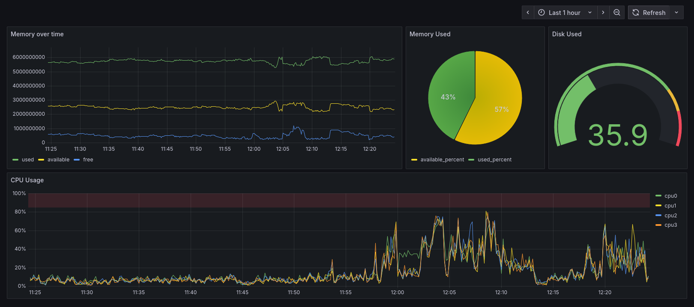
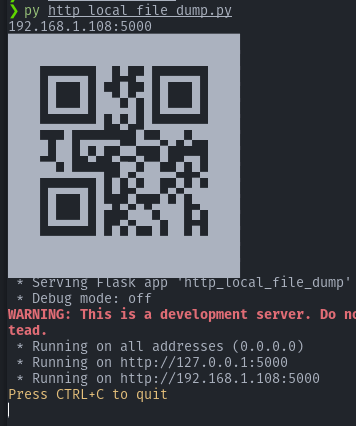
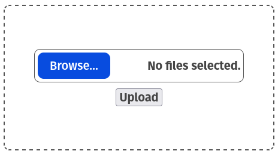
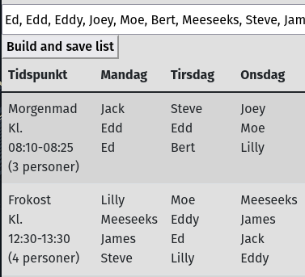
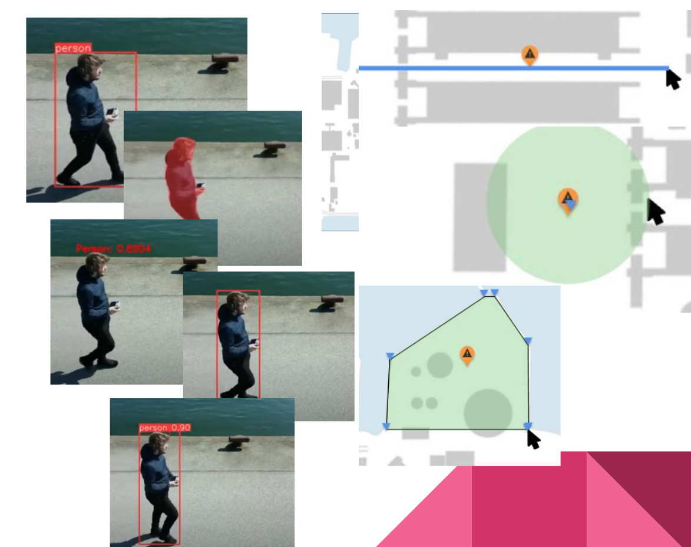
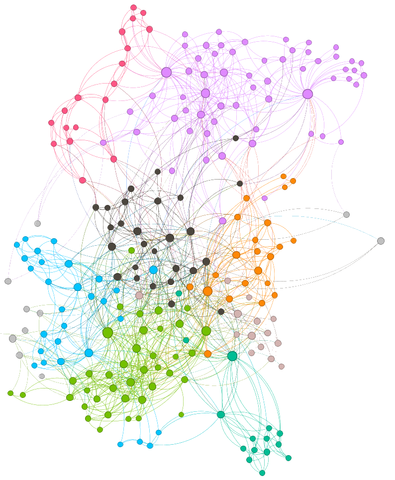
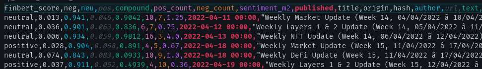
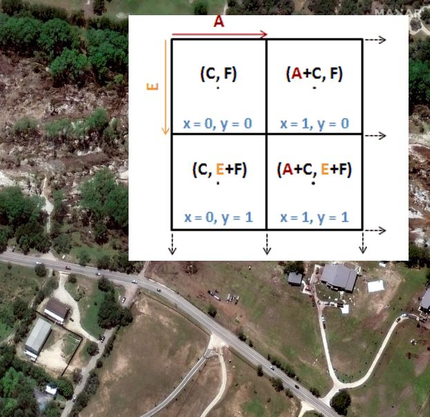

I developed a script designed to discover and manage all Wiz lights connected to my Wi-Fi network. This tool allows for seamless control of all of Wiz lights, even as their locations change and their IP addresses fluctuate. One of the standout features of this script is its ability to cache registered IPs and settings, which minimizes delays and enables near-instant control. This fast operation also lends itself well to automation scenarios, making it particularly useful for coordinating lighting during events like a "Tour de chambre." To ensure reliable performance, the script integrates the pywizlight library, which leverages the necessary communication protocols.
Github gist ➚ | Date 2025/11/18
Database deployment solution utilizing TimescaleDB, pgAdmin, Telegraf, and Grafana, aimed at managing timeseries data for various projects. This stack provides an efficient, scalable, and visually informative approach to monitoring and analyzing real-time metrics. It uses TimescaleDB; A PostgreSQL extension tailored for timeseries data, which supports complex queries and time-based analytic. pgAdmin; A web interface for managing postgres, facilitating easier database administration and query execution. Telegraf for a reliable metrics collector that gathers performance data in real-time for analysis, and Grafana; A dashboard tool that transforms metrics into interactive visualizations. A Timescaledb sql script was created for the news fetcher which leverages the advanced options available via Timescale. It can be found here.

Github repo ➚ | Date 2025/10/30


A barebones script built using python with Flask and qrencode to turn your computer into a local file drop. It spins up a web server, generates a QR code, and lets anyone on your network upload files straight to your machine. Just a quick and dirty way to share files. Thrown together for casual use at my living collective, where it comes in handy for file backups and party events.
Github gist ➚ | Date 2025/06/23

A HTML/CSS/JS Github Pages app to create kitchen duty week lists, built for Højskolen Mors where I went E24. It evenly spreads assignments across the week and tries not to stick the same person on the same day again and again. The clean, print-friendly layout makes it easy to download and slap onto the fridge or bulletin board. You can find it here. It is designed to keep things running smoothly, save countless hours and a lot of grumbling for the interns who come after us.
Github repo ➚ | Date 2025/01/14

I wrote my thesis at Aalborg University in Human-Computer Interaction, supervised by Timothy Robert Merritt. Our project was part of HERD, which looks at how drones and drone swarms can improve areas like agriculture, public safety, and search and rescue. In the first semester, we worked with Robotto, an AI and drone company, and Amagerværket, a biofuel power plant. Together, we ran co-design sessions to figure out the best ways to show biofuel data to users and explore how drones could help manage critical infrastructure. Later, we focused on how drones can improve the security and safety of critical infrastructure, especially as threats become more advanced and traditional monitoring isn't enough. We researched what operations staff need from drone systems and how interfaces should be designed to support them. The project resulted in practical design suggestions that can help both designers and researchers build better drone-based security solutions.
Github repo ➚ | Date 2024/06/14

Documentation scraper and network visualization tool developed for Playday in Python. The application combines a webscraper and a GEXF network generator to optimize user-facing documentation. The scraper uses requests and BeautifulSoup with a breadth-first search to crawl all valid links. The harvested data is processed into pandas DataFrames and converted into .gexf files via NetworkX, enabling visualization in Gephi. Clustering algorithms in Gephi assign colors to nodes, effectively isolating navigation clusters and revealing user traversal paths through the documentation. This approach provides clear, actionable insights for improving content structure.
Github repo ➚ | Date 2023/04/29
This is a Python toolkit I built for collecting and analyzing news articles. It uses Selenium, BeautifulSoup, and Pandas to scrape content and stores the results in a SQL database with SQLModel. The modular design makes it easy to add new sources by implementing a scraper class based on the IScraper interface. Another script, db2coin_sentiment.py, applies sentiment analysis using VADER, m2 from NLTK, and FBERT from HuggingFace to generate insights from the collected data.

Github repo ➚ | Date 2022/02/01

This Python script processes .png images by splitting them into smaller tiles of a specified size. For example, a 10.000×10.000 px satellite image with a target tile size of 250×250 px produces 1.600 smaller images. Beyond splitting, the script analyzes each tile to calculate the percentage of specific colors (by default, detecting forest and water bodies). If accompanying .pgw files are present (with the same base filename as the .png), the script reads them as top-left corner coordinates. It then calculates the geolocation of each tile and stores this alongside the color data. The goal is to process and enrich data for use in machine learning workflows.
Github repo ➚ | Date 2021/11/14